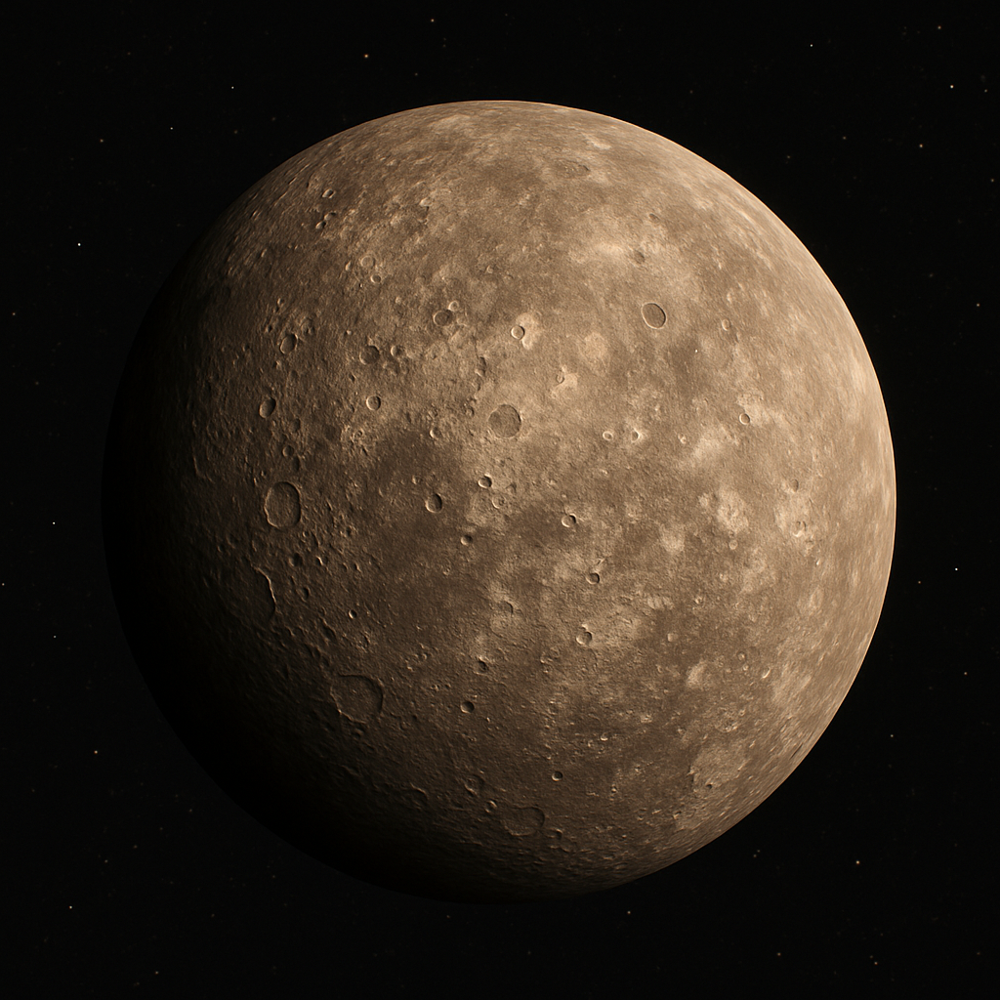
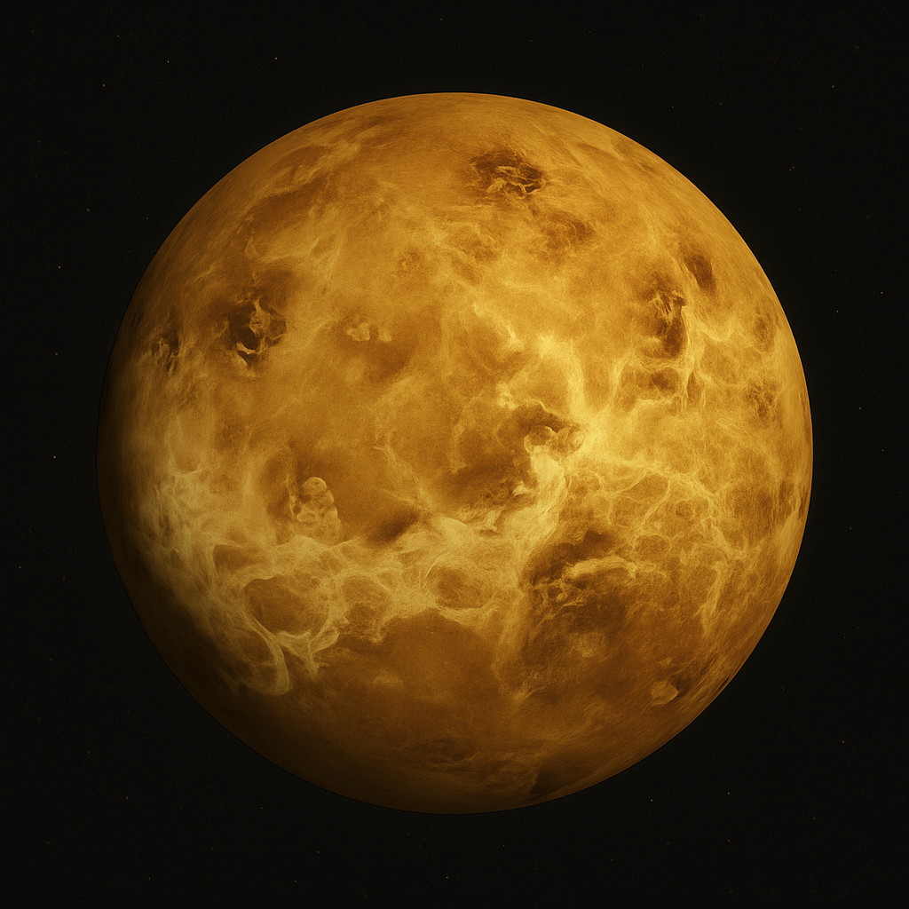
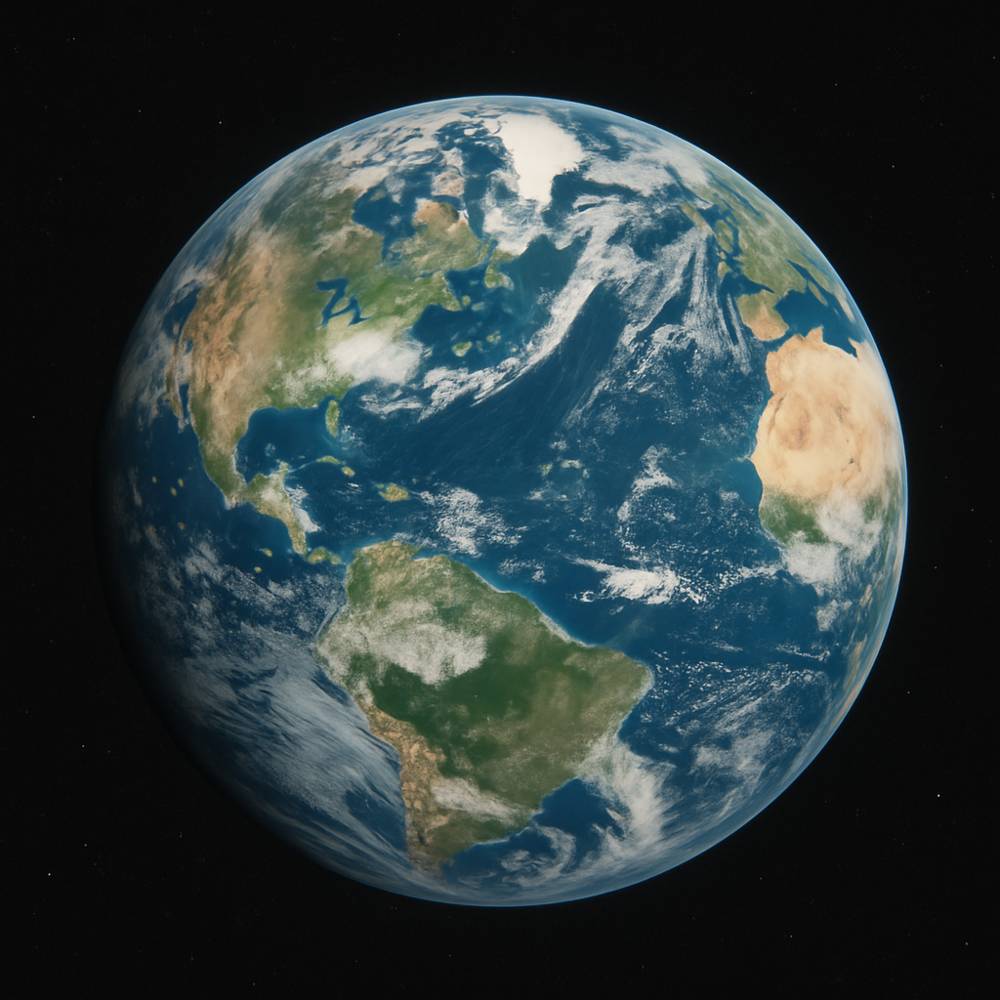
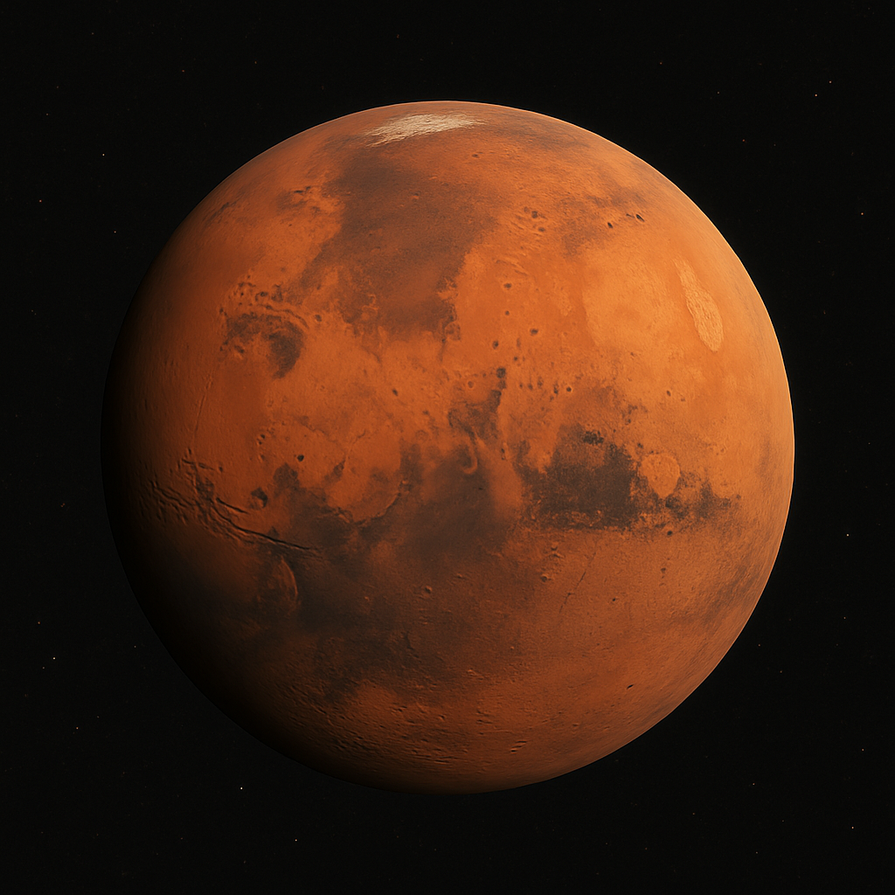
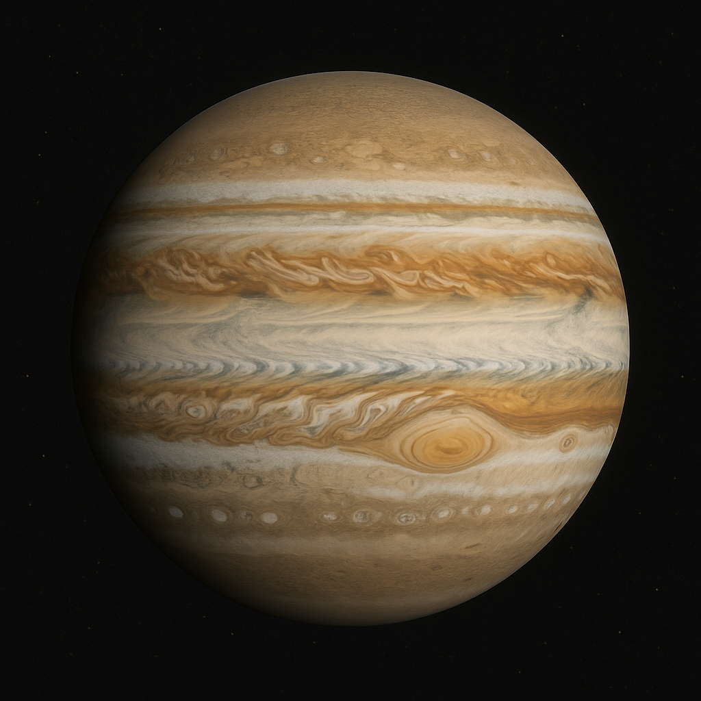
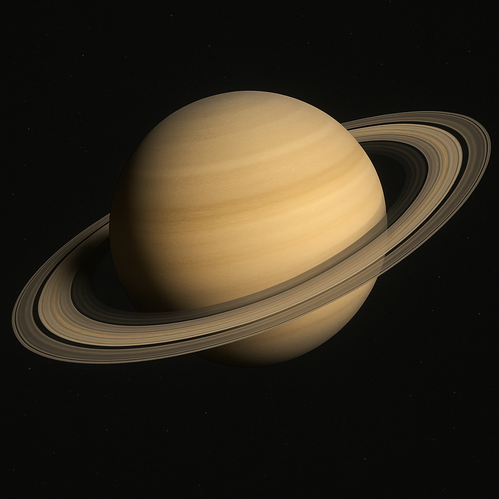
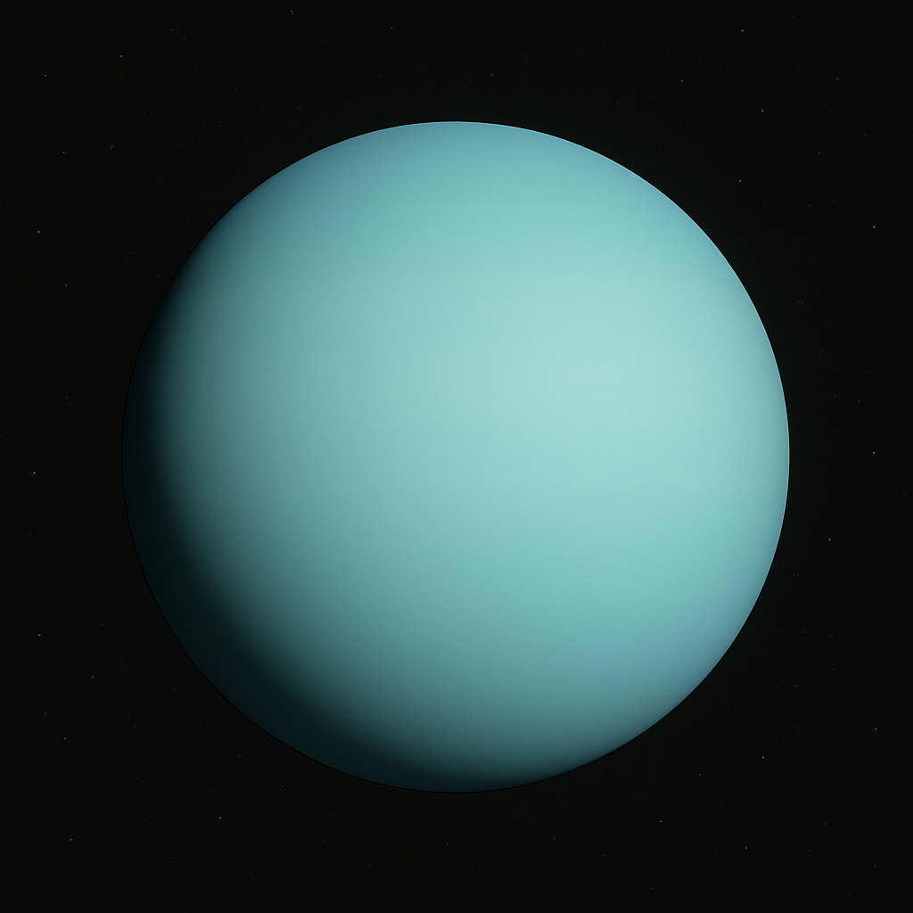
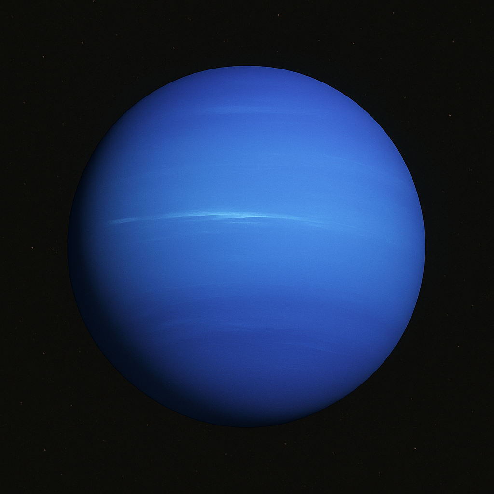

-

01-수성(Mercury)
Airless and cratered, Mercury races around the Sun in just 88 days. Extreme heat by day and deep cold by night shape its stark, rocky face.
read more -

02-금성(Venus)
Blanketed by thick clouds, Venus is a hot, high-pressure world. Sulfuric skies and slow rotation create fierce winds and a runaway greenhouse.
read more -

03-지구(Earth)
Our ocean world hosts liquid water, protective air, and life. Dynamic weather, shifting plates, and a magnetic field make Earth uniquely active.
read more -

04-화성(Mars)
The Red Planet shows canyons, dried riverbeds, and polar caps. Thin air and dust storms hint at a wetter past and a frontier for exploration.
read more -

05-목성(Jupiter)
King of the planets, Jupiter is a stormy gas giant. Colorful bands and the Great Red Spot swirl above a deep, unknown interior.
read more -

06-토성(Saturn)
Famed for its bright rings, Saturn is a light, windy giant. Icy moons and ringlets create one of the Solar System’s most iconic sights.
read more -

07-천왕성(Uranus)
An ice giant tipped on its side, Uranus rolls around the Sun. Pale blue hues hide a cold, hazy atmosphere rich in methane.
read more -

08-해왕성(Neptune)
Far and fierce, Neptune hosts supersonic winds and dark storms. Its deep blue color comes from methane in a frigid, dense atmosphere.
read more